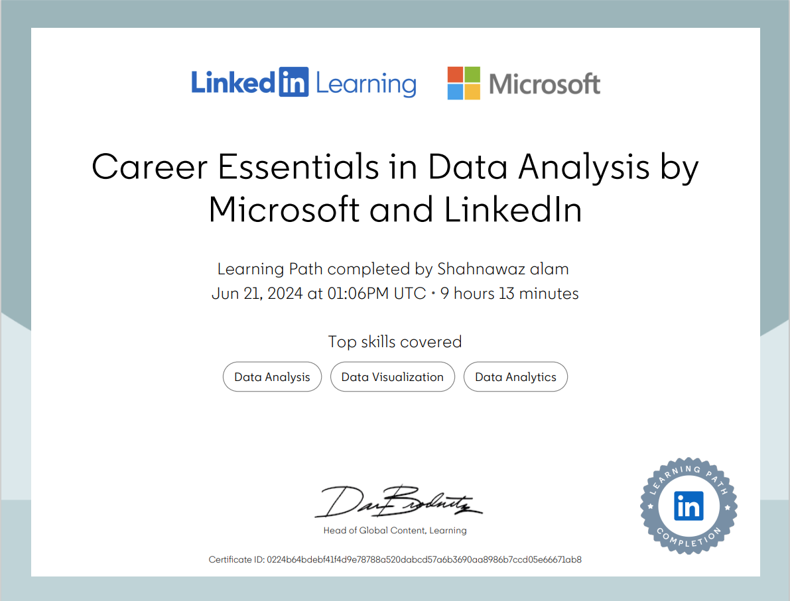

Certificates
Career Essentials in Data Analysis by Microsoft and LinkedIn
Data Analytics Foundations
Career Essentials in Data Analysis
Generative A.I
Python
Built it from IIT BHU
Treshawk from IIT BHU
Data Analytics Foundations
In this certification of Data Analytics Foundations is the initial step in understanding how data can be used to make informed decisions. This foundational stage involves key concepts and practices essential for anyone entering the field of data analytics
covers topics such as:
• Data Collection: Learning methods to gather accurate and relevant data from various sources, such as databases, APIs, or web scraping.
• Data Cleaning: Techniques for preparing raw data by handling missing values, correcting errors, and standardizing formats to ensure reliability.
•Statistics: Understanding basic statistical measures (mean, median, mode, variance) to summarize and interpret data patterns.
• Data Visualization: Using graphs, charts, and other visual tools to represents data insights effectively for visualization of data
•Data-Driven Decision Making: Applying analytical insights to support strategic and operational decisions within an organization..
Career Essentials in Data Analysis
In this Career Essentials in Data Analysis course by Microsoft and LinkedIn provides a comprehensive introduction to data analysis skills, ideal for beginners or those transitioning into data roles. This course covers core concepts and practical tools used in the field of data analysis.
Topics covered by this course are :
Data Fundamentals: Basic data concepts, types of data, and an introduction to how data is used to drive decisions.
Excel Skills for Data Analysis: Essential functions in Excel, including data cleaning, visualization, and basic analysis techniques.
Data Visualization: Creating clear and impactful visual representations of data insights to support storytelling.
SQL Basics: Learning to query databases, filter, and aggregate data using SQL.
Power BI: Building and publishing interactive reports and dashboards with Power BI.